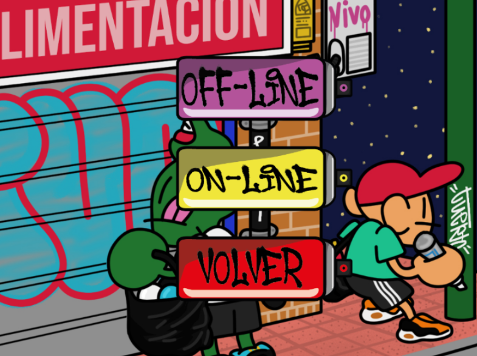
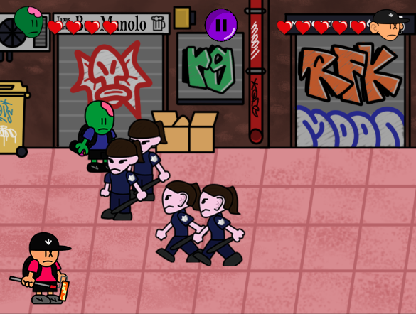
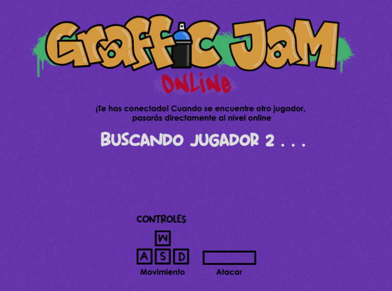

Multiplayer videogame developed in Phaser3
Graffic-Jam is a 2D fight videogame for 2 players, inspired by graffiti culture. The game has several levels. Each one of them is a different scenario related to the world of graffiti, such as train tracks or city streets.

Players aim to reach the end of said level to be able to paint a piece of graffiti, and along the way they will encounter different waves of enemies that they will have to defeat, such as police, security forces or other gangs.


You can play in online mode!
Graffic Jam was developed in Java, using Spring Boot and Phaser 3. It operates by passing messages from an authoritative server to the clients.


Some scenes